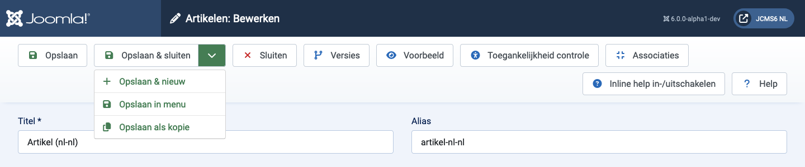
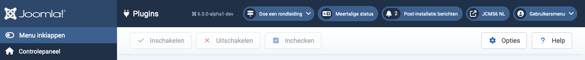

Werkbalken zijn aanwezig op bijna alle Joomla! Administrator-pagina's. Dashboards zijn de opmerkelijke uitzonderingen. Ze bevinden zich bovenaan de pagina, direct onder de Titelbalk die de naam van de pagina bevat en verschillende Statusmodules zoals de Joomla Versie en Voorpagina-link.
Elke pagina heeft een reeks knoppen die passen bij het doel ervan. Sommige zijn algemeen, zoals Opslaan, Annuleren en Help. Andere zijn zeldzaam, zoals Opnieuw opbouwen en Wezen verwijderen. Sommige zijn altijd actief. Andere zijn inactief (grijs) totdat een selectievakje van een lijstitem is geselecteerd.
Als er veel knoppen zijn, worden ze verdeeld over twee rijen. Enkele voorbeelden:

De knoppen zonder neerwaartse chevron werken direct. Dus Opslaan zal de pagina opslaan en terugkeren met een groene bevestigingsboodschap of een rode foutmelding. Merk op dat, in de meeste gevallen, de knop Annuleren een bewerkpagina sluit zonder wijzigingen op te slaan.
De knoppen met een neerwaartse chevron-pictogram hebben twee functies. Selecteer het pictogram en er verschijnt een lijst, zoals getoond in de bovenstaande schermafbeelding. Dat stelt u in staat om alternatieve acties te selecteren. Selecteer de knop en die actie wordt uitgevoerd. Dus Opslaan & Sluiten in de voorbeeldschermafbeelding.
Sommige knoppen verschijnen alleen onder bepaalde omstandigheden. Bijvoorbeeld, de knop Toegankelijkheidscontrole verschijnt alleen als de System - Joomla Accessibility Checker plugin is ingeschakeld. En Associaties verschijnen alleen op meertalige sites.
Verken wat de verschillende knoppen doen!

In dit voorbeeld van de werkbalk zijn de knoppen grijs om aan te geven dat ze inactief zijn. Ze worden helder en actief wanneer een selectievakje van een Plugin-item is aangevinkt om het klaar te maken voor Inschakelen, Uitschakelen of Inchecken. Verschillende lijstitems kunnen worden geselecteerd voor gelijktijdige actie, wat het hoofddoel is van deze werkbalkknoppen. Individuele items kunnen worden verwerkt met de pictogrammen in elke rij (niet getoond).